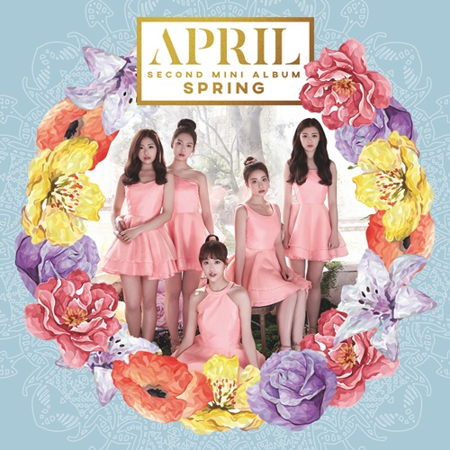

2015년 8월 24일, 쇼케이스를 통해 첫 데뷔 무대를 가졌다.
첫 음악방송 데뷔 무대는 2015년 8월 25일 더 쇼에서 했다. 그룹명 APRIL은 최상을 의미하는 'A'와 사랑스러운 여성을 표현하는 'Pril의 합성어로 '사랑할 수밖에 없는 여성'을 뜻한다고 한다. 또한 4월처럼 기분좋은 따뜻함을 노래하는 그룹이 되겠다는 의미도 가지고 있다고 한다.데뷔 이후 '청정돌'이라는 수식어가 생겼다.
2020년 4월 22일 우여곡절 끝에 7번째 미니앨범 Da Capo으로 1년 6개월만에 컴백했다.
데뷔 이래 모든 지표에서 가장 좋은 성적을 거두며 긴 공백에 대한 염려와는 달리 성공적으로 활동을 마쳤다.
매우 긴 공백기를 가진 후 2020년을 맞이했으나, 전반적으로 매우 좋은 성과를 거두었다. 2018년부터 이어진 이나은의 개인 활동은 2020년을 맞아 완전히 자리를 잡은 듯 보였다.
부족한 그룹의 인기에 비해 개인 활동으로는 확실히 1군 걸그룹 못지않은 성과를 거두고 있다. 다량의 CF, 꾸준한 예능 출연, 드라마까지 소화하면서 최근 여자 아이돌 중에서는 거의 독보적인 수준의 활동을 보여주고 있었다.
음원차트에서도 선전했으며 미니 7집의 앨범 판매량이 폭등하지는 않았으나 이후 유튜브와 같은 커뮤니티를 중심으로 에이프릴의 영상과 컨텐츠들이 돌아다니면서 물 밀듯이 팬들이 유입되었다.